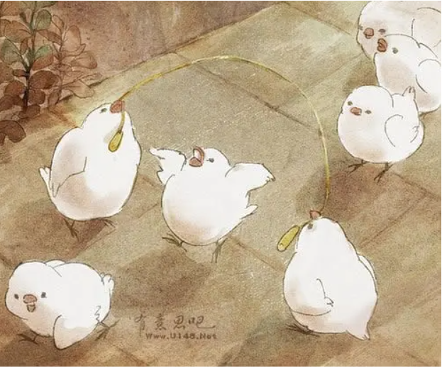
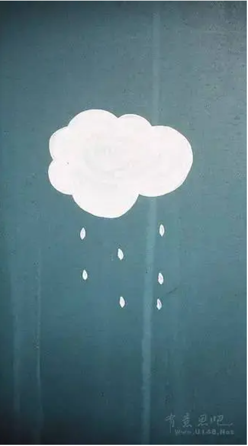
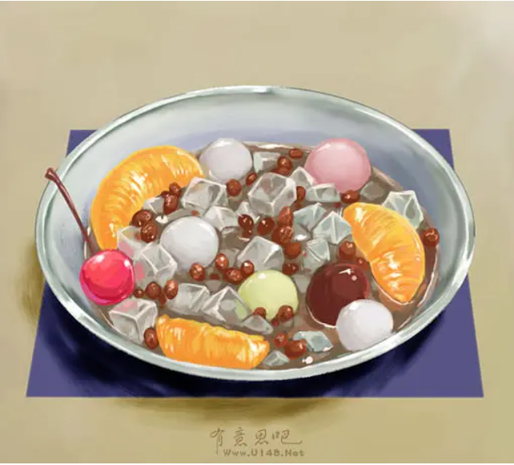
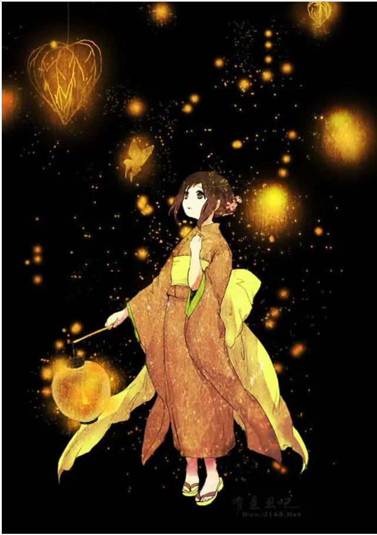

治愈小故事一
很久很久以前，整个森林都是懒懒的，知了只在饿了的时候鸣叫，候鸟躲在洞穴里过冬，狗熊一年四季都在舔着蜂蜜。可是上帝受不了了，于是他把身边的闹钟扔到凡间，闹钟头顶着一个大大的红冠，在日出的第一抹阳光的照耀下唱起《最炫民族风》，于是，整个世界都热闹起来了。

治愈小故事二
风听到了海豚和云的笑声。云是个爱哭鬼，可是风还是特别喜欢她，风推着她跑啊跑的，把她带到每个好玩儿的地方去。她哭的时候风就呼啊呼把她的眼泪吹干了，后来风没有留住云，她变成了雨，去到了海里陪海豚征服湛蓝的世界去了，风还是一遍一遍地吹动海面。因为风还是特别喜欢她。

治愈小故事三
小白熊为了跟小熊猫做朋友，就用颜料把自己的手脚、耳朵都涂黑了，还画了一个大大的黑眼圈，伪装自己是熊猫，鼓起勇气去认识了小熊猫。他和小熊猫一起吃竹子，一起抱着树玩，直到有个阴天，小熊猫跟他说，要下雨了你赶紧去躲一躲，小白熊就小白熊呗，为什么要假扮成小熊猫呀？

治愈小故事四
兔子姑娘问兔子先生，如果不是兔子，你想成为什么？兔子先生说，都可以，做老虎的话就可以保护你，做星星就可以在你睡觉的时候守护你，做萤火虫可以给你照亮，做小浣熊的话能和你做好朋友，但是我最想做的还是兔子，因为你也是兔子。只有兔子和兔子才能在一起啃胡萝卜。
